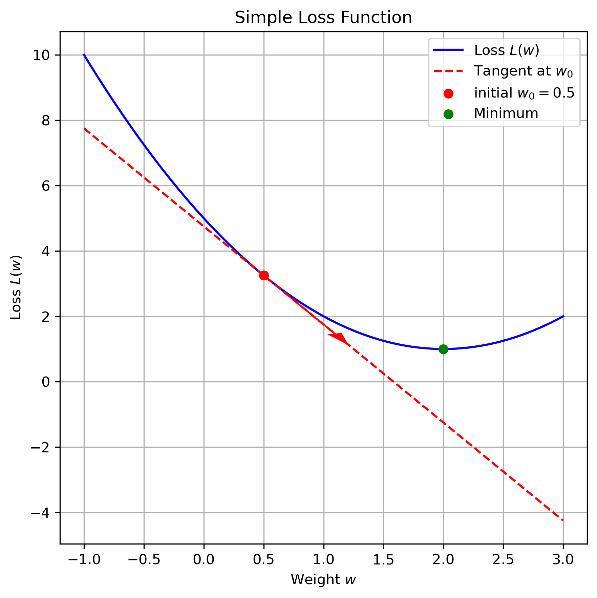
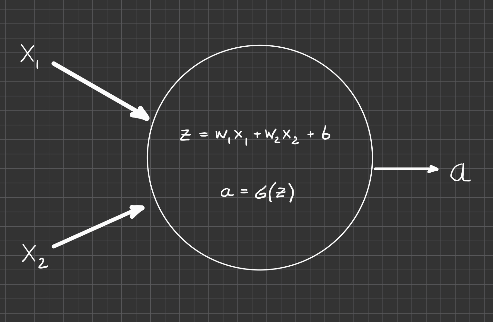

Challenge: find (global) minimum for non-convex landscapes
Non-convexity is problem of (non-linear) model, not the complex data distribution
need efficient numerical algorithm to navigate in complex loss landscapes
Gradients
Idea & Hope
use local properties of loss lanscape to update parameters
Code
import numpy as npimport matplotlib.pyplot as plt# Define the loss function and its derivative (gradient)def L(w):return (w -2)**2+1# Parabola with minimum at w=2def dL(w):return2* (w -2)# Choose a point away from the minimumw0 =0.5L0 = L(w0)grad = dL(w0)# Define tangent line at w0def tangent(w):return L0 + grad * (w - w0)# Create range for plottingw = np.linspace(-1, 3, 200)# Plotplt.figure(figsize=(6, 6))plt.plot(w, L(w), label='Loss $L(w)$', color='blue')plt.plot(w, tangent(w), '--', color='red', label='Tangent at $w_0$')plt.scatter([w0], [L0], color='red', zorder=5, label=f'initial $w_0 = {w0}$')plt.scatter([2], [L(2)], color='green', zorder=5, label='Minimum')# Annotate gradient directionplt.arrow(w0, L0, 0.6, grad*0.6, head_width=0.1, head_length=0.3, fc='red', ec='red')# Labels and styleplt.xlabel('Weight $w$')plt.ylabel('Loss $L(w)$')plt.title('Simple Loss Function')plt.legend()plt.grid(True)plt.tight_layout()plt.show()

A more realistic loss function will depend on many weights and have non-convex shape
Gradient Descent
changes in parameter \(w\) will propagates through network to affect \(L\)
Parameter Update\[
w = w - \alpha \frac{dL}{dw}
\]
similar for bias term \(b\)
local derivative: \(\frac{dL}{dw} = f(w)\)
vectorization: \(w\) and \(\frac{dL}{dw}\) are vectors of same dimension. Derivatives \(\to\) Gradients
each sample \(i\) contributes to overall loss and overall gradient \[
\begin{aligned}
L(w) &= \frac{1}{N}\sum_i L_i(w) \\
\frac{dL}{dw} &= \frac{1}{N}\sum_i \frac{dL_i}{dw} \\
w &= w - \alpha \frac{d L}{dw}
\end{aligned}
\]
Initialization (random): \(w_0\)
step-wise update is expensive (sum over all data)
in practice this is done for **batches* of training samples
Forward Calculation
Example: Logistic regression

Logistic regression with two input \((x_1, x_2\)) and one output activation \(a \in [0,1]\). This network encodes a computation that is applied to each input sample \((x_1, x_2)\).
The loss function (binary cross entropy): \[
L(a,y) = -y \log(a) - (1-y)\log(1-a)
\]